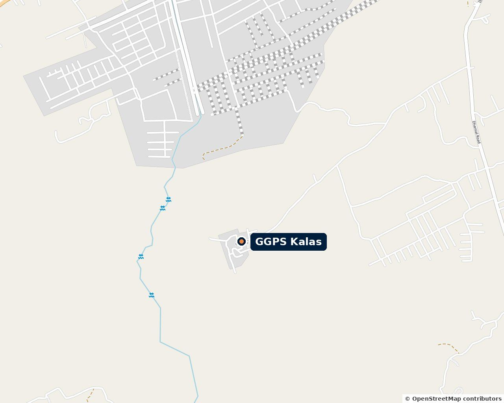
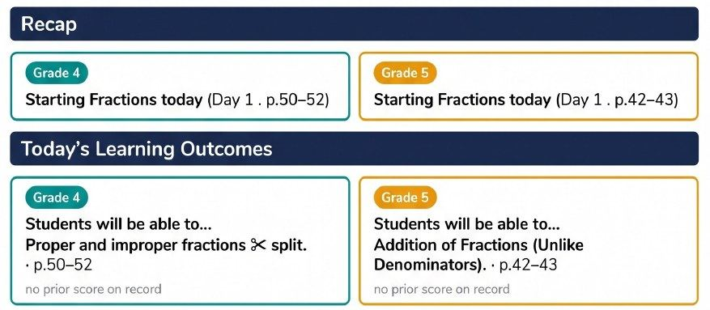
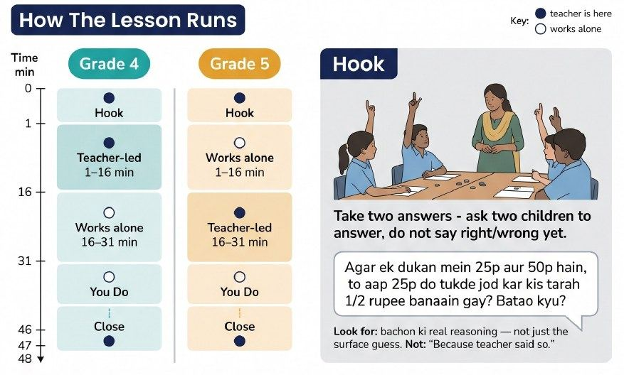
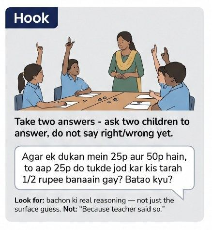
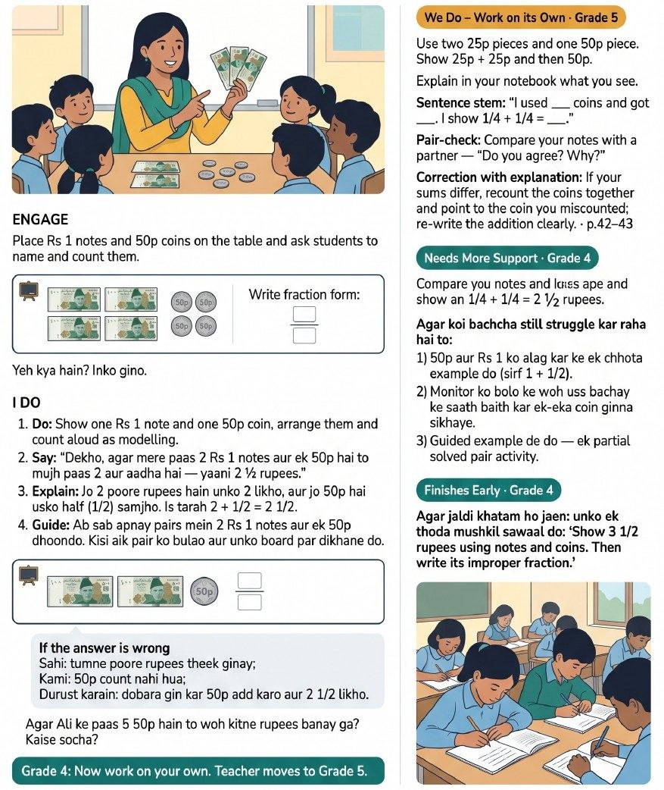
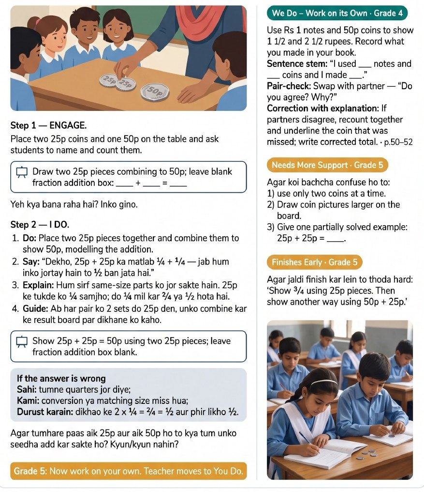
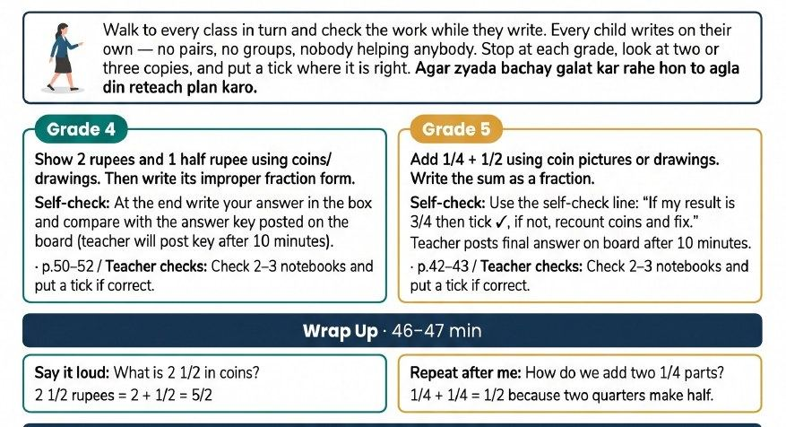
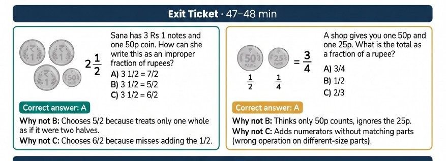

GGPS Kalas, 7 October
One morning at a four-teacher primary school. What the numbers said the night before, what one fractions lesson looked like on three phones, and what the staff room said when the phones were off.

- The night before, the numbers said everyone at this school had tried Rumi and nobody had made it a habit. Two of the four teachers could not open the new multigrade plans, because the school had two ID codes.
- At 10:50 we sat with Salma, fixed the number, and watched Rumi write a two-grade fractions plan. Salma liked it, and worried it would split attention.
- At 11:16 Salma taught fractions to grades 4 and 5 together. Three phones recorded it. The plan asked for coins and notes on the table. The board did the work instead.
- By 11:44 the same lesson had two scores, 50 and 40. Same sixteen checks, two different rulers. This is the heart of the report.
- At 11:51 Sohaib sat down with Salma for the debrief. Six of eight things right, from a guide the machine had cut short.
- Around midday the staff room told us what the data cannot: print beats phones, parents complain, the gutter took a month, and the coach is still worth it.
- After, six moves, each with an owner and a number to check.
Every chapter opens short. Tap Open inside a chapter for the minute-by-minute detail and the audio. Hover or tap any code like G2 to see what it means. Leave a sticky note at the end.
Everyone switched on, nobody doing much
Before we set foot in Kalas, one query told us who to sit with and what to ask. It also handed us a guess to test, and the guess was about a school code.
Playbook Step 0, trigger · Layer 1, product analytics review · Layer 2, a written hypothesis
The school is small. GGPS Kalas, in Rawalpindi, has four teachers on its roster: Asima, Gul, Nabeela and Salma. They teach grades 1 to 5. The plans they pull are for grades 2 and 3 together, and 4 and 5 together, so two grades share a room.
Everyone is switched on. All four have made a lesson plan since August, 100 percent. In the markaz, the group of 13 schools that one AEO, the government officer who visits their classrooms, looks after, it is 90 percent. Across Rawalpindi it is 75.
But nobody is doing much. Three plans per teacher since August. The typical markaz school makes 4, the typical Rawalpindi school 6. Three AI-coach lessons in nine weeks. Zero in-person observations, ever, while the assigned AEO has done 23 in other schools. The three scored lessons sit at 48 to 56 percent, against a markaz average of 56. Student engagement scored 3 out of 9 on every single one.
Then came the morning of 6 October. Between 09:53 and 10:20 all four teachers typed MGLP, the command for a multigrade lesson plan. Someone had told them to. Asima and Gul got their plans. Nabeela and Salma were told the feature was not switched on for their school. The reason is that Kalas carries two EMIS codes, two government ID numbers. 37330566 is on the Rawalpindi sheet and in the pilot list. 37330568 came in with the old TaleemHub import, and it sits on Nabeela's and Salma's accounts.
Our written guess going in: the two codes split the school in half, and the plan itself is written for materials the room does not have. The classroom would have to confirm or overturn that.
Open the rest of the numberssix more charts, and the plan we walked in with
The plan we walked in with
We named three teachers to sit with. Salma first, because the numbers disagree loudest there. Salma's fractions lesson that morning scored 48 percent, the lowest of the three scored lessons. Yet Salma is the teacher trying hardest. 13 messages in one day, a request for feedback in picture form, and two refusals from the multigrade picker. Gul, because Gul has the highest volume, rated 8 plans out of 8 useful, and took two multigrade Urdu plans that morning, while engagement stayed at 3 out of 9 across both scored lessons. Asima, because Asima has six plans, three multigrade plans that morning, and not one AI-coach recording in six months, the only roster teacher with none.
Three questions for every teacher. Who told you about MGLP this morning, and what did Rumi reply? Of the plans you rated useful, which did you actually teach? Has the AEO sat in your class this term?
The day picked its own teacher, as days do. We sat with Salma.
At 10:50 we sat down with Salma for a hands-on session, and the first job was that code.
A new number, a new plan, and one worry
At 10:50 Salma could not open the multigrade plans. By 11:07 Rumi had written one for grades 4 and 5, and Salma liked it, with one worry.
Playbook Layer 3 · Teacher interview · Track A, access, then Track B, delivery
This chapter rests on the 21-minute recording of the session from Mashhood's phone. Minute marks are from that tape, clock times from the database.
First, the number. Salma's number had gone off the night before. Rumi opened, the multigrade plans did not. At 02:15 the cause came out: Salma's WhatsApp had moved to a new number, and Rumi was still on the old one. Salma had cleared the app, then spent two or three hours trying to get the old data back, with nothing to show. Salma knew the rule: "When we change number, all the lessons are gone."
Six minutes from fix to plan. Salma chose the number to keep, and Mashhood registered it at 11:01. At 11:02 Salma typed MGLP, the code for a multigrade plan, one plan for two grades in one room. At 11:07 Rumi sent back "Fractions: Proper, Improper, Addition · Grade 4 + Grade 5 · 48 minutes". The page says Day 1 of the Fractions chapter.

Then, how Salma already teaches. At 01:09 Salma explained the maths room. The first chapters are the same for both grades. In fractions, both recall what a fraction is and its types, then grade 4 stays on same denominators and grade 5 moves to different ones.
The worry. At 09:20 came the worry. The plan itself Salma called "very good". Salma already manages two grades: one class reads outside while the other is taught, then they swap, and when both grades have a poem the board is split in half. Reading the plan as well would divide concentration. At 10:43 came a senior colleague's rule, passed on by phone: no mobile in class, or everyone's concentration goes that way.
سر، مجھے یہ سمجھ نہیں آ رہی کہ ہم نے ڈیورنگ دا لیسن، ہم یہ چیز دیکھ رہے ہوں گے، سافٹ ویئر پر کر رہے ہوں گے۔Sir, I don't understand how, during the lesson, we will be looking at this and doing it on the software.
Did the plan match? Salma read the plan through. At 15:43 Mashhood asked: does it align with what you have been telling me? Yes. A shared recall first, then grade 4 on same denominators and grade 5 on different ones. At 16:53 Salma said the same topic for both grades is easier: one recall for all, one worked question per grade, then practice, and the time manages itself. At 17:53 Mashhood added that grades 3, 4 and 5 can be picked together. Salma had been thinking the same.
The deal. At 20:20 Mashhood set the terms. At least ten minutes, recorded through Rumi, not a separate recorder, phone in the middle of the room so the children are heard too.
Open the plan's 48 minuteswhat Rumi asked for, and what the room would need

- Minute 0 to 1, the hook. Two children answer a question about 25p and 50p coins.
- Minute 1 to 16, the first turn. The teacher is with grade 4, with Rs 1 notes and 50p coins on the table. Grade 5 works alone: 25p plus 25p makes 50p, in the notebook.
- Minute 16 to 31, the swap. Grade 4 alone: show one and a half and two and a half rupees with money. The teacher is with grade 5 and the 25p coins: a quarter plus a quarter is a half.
- Minute 31 to 46, you do. The teacher walks to each grade and ticks notebooks.
- Minute 46 to 48, close. One question per grade, and a three-choice exit ticket each.
سر، وہ یہ کہ ویسے بہت اچھے بنے ہوئے ہیں۔ ان کو اگر ہم پہلے سے پڑھ کے نا، اس کے ساتھ ساتھ وہ کر لیں۔Sir, they are very well made. If we read them beforehand, then do it alongside.
The room Rumi is walking into. Several apps want data every day, one for dengue. The printed plans reached the school last week, after the exams, with no names on them. Rumi's homework went home, but most children could not print it, so Salma set a second one. And at 12:38 Salma said the school code on the registration form had come up as 568. Mashhood said it is fixed now.
Nine minutes after the plan arrived, at 11:16, Salma taught it, and three phones were listening.
Fractions for two grades, with the coins missing
Salma taught fractions to grades 4 and 5 in one room, and taught the method cleanly. The plan asked for rupee notes and coins on the table, and the room had the board.
Playbook Layer 3 · Teacher interview · Track B, delivery. Layer 2 guess "the plan is written for materials the room does not have" confirmed in the room.
Three phones recorded this lesson. Salma's own, through Rumi. Sohaib Danish's, the Training Manager, through the observe flow. And ours. Rumi wrote the plan at 11:07, nine minutes before the first word. It is a two-grade plan, called an MGLP, one plan for two grades sitting in one room.
The plan runs 48 minutes. One silent minute of hook, a money question. Then grade 4 is taught for fifteen minutes with Rs 1 notes and 50p coins while grade 5 works alone. Then the two grades swap. Then fifteen minutes of walking between the grades and ticking notebooks. Then a two-minute close with an exit ticket.
Salma taught a different lesson. A recall for both grades together, then the four types of fractions for nearly four minutes. Grade 4 got adding with the same denominators, one minute and forty seconds, and one question to do alone. Grade 5 got the hard one, mixed numbers with different denominators, for six minutes. Then homework for both grades, and the phone stopped at 15:46.
The content was right. Both learning goals were taught, and the machine credited both. What was missing was the stuff. No notes, no coins, no walk between the desks. The board did all the work. The guess we wrote the night before held in the room: the plan asks for things the school does not have.
Open the full lesson, minute by minutethe plan beside the room, with the audio
The plan has five steps: the hook, grade 4 taught, grade 5 taught, You Do, and the close. Green is on plan, amber ran long or early, red is missing, gold is not in the plan. Every time is from Salma's phone. Sohaib's phone runs 3.6 seconds behind it, and ours 11.6 seconds ahead.





The phone goes down on plan
Phone on the desk. Salaam, class. How are you. The plan's hook is silent. This one is not, but the lesson has begun.
A recall instead of the hook not in plan
A circle in two parts, one part shaded. What fraction? A child says one. Four parts, two shaded. A child says two. Both grades together, one voice. "Clear?" "Yes ma'am."
سب سے پہلے اس کو تھوڑا ری کال کر لیتے ہیں کہ دیکھیں بھئی، فریکشن ہوتی کیا ہےFirst let us recall a little. Look, what is a fraction.
The four types, three minutes forty-five not in plan
Unit, proper, improper, mixed. Proper: a child answers, and Salma states the rule at 02:20. Improper: a child says less, then smaller. Salma states the rule at 02:51. Mixed: a whole number and a fraction, worked on the board into 5/3. A child names the result improper at 04:38. Wrong answer, instant rule, no why. This is the pattern the machine's reflection question is about.
آپ کا جو نیومریٹر ہے، وہ بڑا ہوگا، اور ڈینومینیٹر جو ہے، وہ چھوٹا ہوگا۔ فار ایگزامپل، 8 بائے 3Your numerator will be bigger, and the denominator smaller. For example, 8 by 3.
Grade 4: same denominators no coins
1/3 + 2/3. Add the tops, keep the bottom, then the lowest form. "Clear?" Then one question for grade 4 to solve alone, 2/5 + 4/5. One minute and forty seconds of teaching, against fifteen in the plan. No money on any table.
وین ڈینومینیٹرز آر سیم، یو کین ایڈ دا نیومینیٹرزWhen the denominators are the same, you can add the numerators.
Grade 5 starts, ten minutes early 10 min early
Five and two thirds plus two and five sevenths, on the board. "Which fraction is this?" "Mixed." "First we simplify." Different denominators is the grade 5 learning goal, so the content is on plan. The timing is not.
اب ہم کریں گے ود ڈفرنٹ ڈینومینیٹرزNow we will do it with different denominators.
The reflection anchor: "three times five" the moment
What do we do first with a mixed number? A child says multiply three by five. Salma says three, five, five times three is fifteen, and moves on at 08:01. No why. This is the moment Rumi asked Salma about at 11:39. All three phones caught it. Here they are, side by side.
تھری کو فائیو سے ملٹی پلائی کریں گےWe will multiply three by five.
Different denominators, so LCM on content
Are the denominators the same? Different. "What will you take here?" The LCM of 3 and 7. Prime numbers, so 21. Then the tops: 7 times 17, and 37 times 3 is 111. Sum 240. Divide by 21 to get back to a mixed number, eleven and nine over twenty-one.
یہاں پر اب آپ وہ کام نہیں کر سکتے۔ ٹھیک ہے، یہاں پہ آپ کیا لیں گے؟ اس کا ایل سی ایمHere you cannot do that. So what will you take here? The LCM.
The method, once more ran 6 min
Salma walks the chain again. Simplify the mixed numbers. Check the denominators. Different, so LCM. Add. Divide back. "Clear?" "Yes ma'am." That is six minutes of teaching for grade 5. Grade 4 has had one sum to do alone the whole time.
جب ڈینومینیٹرز ڈفرنٹ ہوں گے تو ہم کیا کریں گے؟ ایل سی ایم لیں گےWhen the denominators are different, what will we do? Take the LCM.
Back to grade 4 on plan
"Did you do it? 6/5?" "Yes ma'am." The check the plan wanted, in fifty seconds, from the front.
6/5۔ ریسٹ آف دا کلاس جلدی ان کو پیش کریںSix over five. Rest of the class, show them quickly.
Work set, phone stopped not the walk
One more question for grade 5, a mixed number plus 5/7. Then homework. The next four questions for grade 4, the next four for grade 5. "Clear?" "Yes." "Stop it." The recording ends at 15:46. Sohaib's phone stops at the same moment.
نیکسٹ جو فور کوئسچنز ہیں، وہ آپ نے کر کے لانے ہیںThe next four questions, do them and bring them.
Wrap up and exit ticket not on tape
NOT ON THE TAPE. The phone stopped at 15:46, minute 16 of a 48-minute plan. We cannot call these skipped. We can only say the recording does not hold them.
The machine's own view of the plan: fidelity 78, which means how closely the lesson followed its plan, marked "informational only" and reported beside the HOTS score, Rumi's sixteen-check sheet. Its four gaps match this timeline: no coins or notes, no silent hook, no walk and check, no exit ticket. It credited both learning goals with timestamps, and that is right. It did not hear the 129.
By 11:44 the same lesson had two scores, 50 and 40, from two different rulers.
One lesson, three phones, two scores, two rulers
Salma taught fractions for sixteen minutes and three phones recorded it. By 11:44 the same lesson had a 50 and a 39.6, and the gap is not two opinions of the teaching.
Playbook Layer 4 · Synthesis · root-cause category: coaching feedback quality, and a product bug
Every recorded lesson in Rawalpindi is scored on HOTS, our thinking-skills sheet: five goals, sixteen checks, each marked up to 3. Salma's phone went through the self-coach path. Sohaib's phone, as the Training Manager, called the TM, went through the observer path. The operator's voice note got a summary and no score. Sohaib's first upload failed, was re-sent, and the failed copy is stranded, see below.
Two phones, two scores. Salma's phone got 24 of 48, shown as 50, "developing". The report and a 100-second Urdu voice debrief arrived at 11:43. Sohaib's phone got 19 of 48, shown as 39.6, "emerging". Sohaib submitted the pre-filled form without changing a mark.
One lesson, two rulers. The self path marks each check 1 to 3. The observer form marks 0 to 3. So five checks read 0 on Sohaib's copy and 1 on Salma's: real-world links, group work, more than one way to solve, children checking their own work, and how the room was set up. That is almost all of the ten-point gap. It is one lesson under two rulers, not two views of the lesson.
On the teaching, the two agree. Instructional strategies scored 8 of 12 on both, and both put a 3 in that area for step-by-step modelling and support. Engagement was weakest on both, 3 of 9 and 1 of 9.
Where the machine was right. It heard the "clear? yes ma'am" rhythm, 14 times on the tape. It heard the instant rule at 02:20, after a right answer, and the instant corrections at 02:51 and 07:58, with no question back in any of the three. It found zero pair work, and no link to real life in a plan built on coins.
Where it was blind. At 10:33 a child said 129 where the board needed 119, Salma repeated it, and the final answer carried it. The machine did not catch that. It cannot see the board, so the three multigrade checks that need a photo went unmarked.
What every score word meansthe two rulers, the two bands, fidelity, and the five goals
- The self-coach path
- The teacher records on their own phone. Rumi scores it, asks one reflection question, and sends a report and a voice debrief. Each check is marked 1 to 3, so nothing can score zero.
- The observer path
- A coach records. Rumi pre-fills the same sixteen checks, marked 0 to 3, editable by the coach. Sohaib edited nothing.
- Developing, emerging
- The band names printed beside the percentage. Same lesson, one band apart.
- Fidelity
- How closely the lesson followed its plan. Salma's phone gave 78. It is shown for information and is not part of the 50.
- G1 Assessment and feedback
- Checks 14 to 16. Do children check their own work, and does feedback help them think. 5 of 9 and 4 of 9.
- G2 Student engagement
- Checks 11 to 13. Do children work together and talk about ideas. 3 of 9 and 1 of 9. Weakest on both.
- G3 Lesson planning and content
- Checks 4 to 6. Does the lesson aim at thinking and link to real life. 4 of 9 and 3 of 9.
- G4 Instructional strategies
- Checks 7 to 10. Open questions, modelling, step-by-step support. 8 of 12 on both.
- G5 Classroom environment
- Checks 1 to 3. Is the room set up for group work. 4 of 9 and 3 of 9.
سبق میں طلبہ کے باہمی تعاون یا گروپ میں مشترکہ مسائل حل کرنے کا کوئی منظر ٹرانسکرپٹ میں نظر نہیں آیا۔The machine's reason for the 0 on group work, from Sohaib's copy: no scene of children working together or solving a problem as a group appears in the transcript.
The three phones, and the copy that got lostthree recordings, one stranded upload, four fidelity gaps
| Phone | Length | Path | What came back |
|---|---|---|---|
| Salma's own | 15:55 | Self-coach, plan attached | 50, "developing". Fidelity 78. Report and Urdu voice debrief at 11:43. |
| Sohaib's | 15:51 | Observer form | 39.6, "emerging". Form submitted with no edits. Debrief at 11:51. |
| The operator's | 16 min | WhatsApp voice note | A short written summary. No score. |
Sohaib's phone runs 3.6 seconds behind Salma's. Times here are Salma's clock.
What the plan asked for, and what the tape holds
Rumi wrote the multigrade plan at 11:07: money on the table, and two timed turns, one grade taught while the other works alone. 48 minutes planned, 16 on the tape. Fidelity found four gaps, all real.
- No coins or notes. The plan opens with Rs 1 notes and 50p coins on the table. The board did that work. Nobody said "coin".
- No silent hook. The plan's first minute is two silent answers. Salma opened with a spoken recall for both grades.
- No walk-and-check. The plan gives 15 minutes to walk to each grade and tick notebooks. On the tape the work is assigned and the phone stops.
- No exit ticket. The plan ends with a three-option ticket per grade. The tape ends at 15:46, before that step.
The machine credited both learning goals with timestamps, which is right. It gave three stars on all three multigrade habits it could hear: switching grades, fair attention to each, a check before moving on.
At 11:51 Sohaib sat down with Salma for the debrief, working from a guide the machine had cut short.
A good debrief, from a guide cut short
Sohaib Danish, the Training Manager, sat with Salma for under seven minutes and recorded it through Rumi. Six of eight things went right. The two misses are the oldest ones in coaching.
Playbook Layer 3 · Track C, coaching engagement · root-cause category: coaching feedback quality
Sohaib opened with thanks, then with praise. Not the vague kind. The recall at the start, and managing grades 4 and 5 in one room.
تو آپ کی کلاس، آپ نے ملٹی گریڈ پڑھائی، جو کہ 4 اور 5 کلاسز ایک ساتھ بیٹھی ہوئی تھیں۔ آپ نے ان کو فریکشن کا کروایا، اور اوور آل کلاس آپ کی بہت اچھی رہی۔Your class. You taught multigrade, grades 4 and 5 sitting together. You did fractions with them, and overall your class went very well.
Then Sohaib went to a real moment, the question about different denominators and the LCM. Asked, and waited. Talked about the teaching moves, not about Salma. Did not jump in to fix things. Said nothing unkind. Rumi ticked six of its eight boxes.
The two misses are the classic ones. Sohaib asked for one change, collaborative work. Then pictures. Then critical thinking. Three changes are hard to carry. And nobody asked Salma to say, in Salma's own words, what would happen next class.
Part of that is the tool's fault. Rumi writes a guide for each debrief from the lesson it just scored. This one ran past the machine's limit of 4,000 tokens, the small chunks it counts text in, and was thrown away. Sohaib worked from the generic fallback instead. The same thing happened on 93 of 337 debriefs in the last seven days.
Open the eight checkswhat Rumi listens for in a debrief, and what it told Sohaib to try
Rumi scores every recorded debrief against eight habits of good coaching.
- Opened with specific praise. Yes. The recall, and the two grades.
- Anchored in a real moment. Yes. The LCM question.
- Asked and waited. Yes.
- Talked about moves, not the teacher. Yes. A move is one step of teaching.
- Held the righting reflex. Yes. The righting reflex is the urge to jump in and fix things yourself.
- Did not disparage the teacher. Yes.
- One improvement only. No. Collaborative work, then pictures, then critical thinking.
- Elicited an if-then commitment. No. Nobody asked what Salma would do next class.
One of the two wins Rumi marked for Sohaib.
میڈم، مجھے آپ کی کلاس میں سب سے اچھی چیز جو لگی وہ یہ تھی کہ آپ نے سب سے پہلے جب اسٹوڈنٹس سے کہا کہ اب اس کو ہم ری کال کرتے ہیں، جو ہم نے کل پڑھا تھا، کہ ہم نے فریکشن پڑھا تھا، وہ ری کال کروایا۔Madam, the best thing in your class for me was when you first told the students, now let us recall what we did yesterday, we did fractions, and had them recall it.
Rumi's advice to Sohaib, in plain words: pick one clear move. Ask the teacher how they will do it next class. Then stay quiet and let them lay out the plan. Agree one step. Save the rest for next time.
The tape shows where it slipped. Sohaib said the focus would be on one thing for now, and the second and third followed anyway. A generic guide has no lesson in it to point to. The one written for this lesson was thrown away before anyone read it.
Salma left with two next steps. Around midday the staff room had a few more for us.
The coach works. The day fights it.
For twelve minutes one senior teacher told Mashhood what the plans and the coach look like from their side of the desk. The tool is liked, and it lands on a day already full of gutters, pencils and photo tasks.
Playbook Layer 3 · Teacher interview · Tracks A and D · root-cause categories: access/technical, awareness or habit, school leadership pressure
This chapter rests on the recording of that talk, 11 minutes 51 seconds, mostly in Urdu. Every quote below is from the tape.
It opened with attendance. About 60 percent of the children come on a normal day. Because the numbers are low, the teacher is called in every Saturday too.
On the plans, the teacher was clear. Printed beats a phone, because a phone in a teacher's hand gets reported at home. For a combined class they open both grades' plans side by side.
On the AI coach, they said it tells them the points they skipped. The hard part is the children, who act up the moment a phone is recording.
Then the part we needed to hear. A month to get a gutter unblocked. Pencils bought out of pocket. Photo tasks sent from above. Any new app arrives on top of all that.
اب کوئی نئی ایپ اگر ہمارے لیے فائدہ مند بھی آتی ہے نا تو ہمیں وہ بری لگتی ہےNow if any new app comes, even one that helps us, it feels bad to us.A senior teacher · 07:27
Four buckets inside: lesson plans · the AI coach · the day job · what we promised.
Open the four bucketsthe plans, the coach, the day, and the promise, with the audio
Lesson plans
Track A · access/technical, school leadership pressure- Liked. The first thing said about them: your lesson plans are very good.
- Print wins. A phone screen can be read sometimes, paper always. They read tomorrow's plan the day before, even when the vehicle makes them late.
- A phone looks like not teaching. A teacher seen on a phone gets a complaint from home that the child was not taught. A child once said the teacher was listening to songs.
- Two plans, one class. For a combined class they open both grades' plans at once and take an idea or an activity from each.
- The new combined plans. The announcement worked on the tablet, not on the phone. Mashhood said that was now fixed.
- No more copying by hand. Plans used to be written out so a file was ready for an inspector. That ended when the printed plans arrived.
پرنٹ والا زیادہ بہتر ہے، کیونکہ نا موبائل سم ٹائم دیکھ سکتا ہے، بندہ سم ٹائم نہیں دیکھ سکتا۔ لیکن یہ پرنٹ ہے، یہ اس کو ہم پراپر ریڈ کر لیتے ہیںPrinted is better. Sometimes a person can see the mobile, sometimes not. But this is print, we can read it properly.
The AI coach
Track D · awareness or habit- It names what was skipped. The coach is quite good, they said. It tells them the points they skipped and what to do next time, so their weak points clear up.
- The capital letter. In a lesson on common and proper nouns the teacher forgot to say a proper noun starts with a capital. The feedback caught it.
- The children perform for the phone. No trouble with the app. Children act up when a phone is recording, so the teacher stops again and again.
- No need to stop. Mashhood said teachers fear a noisy recording will make a bad report, so they stage a model lesson. Teach the way you teach, noise and all. The score and the report truly do not change.
- The reading session. The teacher had already tried it. A reading session recorded as it was got good feedback, and they told the whole school van to do the same.
پوائنٹس بیچ میں سے ہمارے سکپ ہو جاتے ہیں، وہ ہمیں بتاتا ہے کہ آپ لوگ نا آگے مزید یہ کریں تو آپ کا زیادہ بہتر ہوگاThe points we skip in the middle, it tells us: do this next and it will go better.
The day job
School leadership pressure · access/technical- Clerk as well as teacher. The teachers do the clerk's work and its diary activities. The tablet already carries ten apps, one per task.
- The gutter. A blocked gutter left the children nowhere to sit. A whole month went on walking round the village for someone to open it.
- Pencils. The children have none, so the teachers buy them.
- Photo tasks. Zebra crossing photos were demanded daily in the holidays, when school is shut. The teacher called these fake activities, there to pull concentration off teaching.
- Any new app feels bad. This is not about our tool, the teacher said. A city school might take a new app in its stride. Here the first fight is for a working classroom.
- Borrowed internet. Rumi is easy to use. The internet sometimes is not, so they borrow someone's Wi-Fi.
- Training that does not count. The certificate is downloaded. But after a training the system sometimes says it is not complete.
ہم نے پورے گاؤں میں گھومے ہیں کہ کوئی ہمیں گٹر کھول کے دے دے، واپس کوئی میل نہیں تھاWe went round the whole village for someone to open the gutter for us. No one answered.
What we promised
Layer 4 · one owner, a short line to the field- Stop writing plans by hand. If an AEO, the officer who inspects schools, asks for a handwritten file, say Taleemabad provides the plans.
- Message us directly. Mashhood is in the teachers' WhatsApp group now. Any Rumi problem goes as a direct message, not into the group, and we try to solve it the same moment.
- We keep coming. Mashhood promised to visit again, and carries two things out: the training that does not register, and the fact that paper beats phones here.
آپ کو گروپ میں نہیں کرنا، مجھے پرسنلی میسج کریں کہ یہ ایشو ہے، اس کو میں سولو کروں گاDo not put it in the group. Message me personally that this is the issue, and I will solve it.
The teacher handed us a list, a gutter, a phone that gets reported, a training that does not count, and the last chapter is what we do about each.
Six moves, each with a number to check
A report is half the job. Each move below says what changes, who owns it, why we think it helps, and the number we read later.
Playbook Layer 4 · Synthesis · one owner per move, escalate the code question
1 · One code per school
Kalas has two school codes. The mastersheet says one, the roster the AEO works from, the school officer who visits teachers, says the other, and two accounts sit on the code the multigrade pilot does not recognise. Two of four teachers were turned away on 6 October for it. The stop-gap landed on the morning of 7 October: Nabeela's and Salma's numbers went on the pilot list, so all four can open a multigrade plan. The real fix: make the mastersheet the source of truth, re-key every school from it, repoint the teacher accounts and old roster rows, and retire the roster import. Which code Kalas keeps goes up. The data team · the code question escalated this week.
Our guess: once one code means one school, no teacher is refused a plan over a typo.
2 · One lesson, one copy
The Training Manager's first upload of Salma's lesson failed while fetching the audio. A second worker retried and transcribed it, then skipped the analysis because the session already carried a stamp from the failure. The observer had been told to re-send, and did. Two copies, one stranded. A retried upload must still get analysed, and nobody should be told to re-send while the message is still queued. The coaching product team.
Our guess: if the retry finishes the job, the observer never sends twice.
3 · The debrief guide must arrive whole
Before a debrief, the coach gets a guide written for that one lesson. On Salma's lesson it was cut off by the AI's writing limit and thrown away, so the Training Manager worked from the generic one. That happened on 93 of 337 debriefs in the last seven days. The coach still scored 6 of 8, but the guide should have named the moment a child said "three times five". The coaching product team.
Our guess: a guide that knows the lesson puts the coach's one improvement where it matters.
4 · Two coaching paths, one next step
At 11:44 Salma's own phone sent a commitment card: wait before correcting, ask one "why" question. Eight minutes later the debrief sent a different one: check every child's homework tomorrow. Nobody said which one counts. Decide which path holds, and make the second path read the first. The coaching product team.
Our guess: a teacher with one clear next step can be seen doing it on the next recording.
5 · Plans for the room they are taught in
The multigrade plan asked for Rs 1 notes, 50p coins and 25p coins on the table. None were in the room, so the lesson lived on the board. The plan runs 48 minutes in two rotations. The tape holds 16. Before the lesson Salma said two rotations would divide concentration, and the lesson was taught mostly whole class. Give the teacher a no-materials version and a 30-minute cut of the plan. The curriculum team.
Our guess: a plan that fits the room and the period gets followed.
6 · Written feedback, and printed plans with names
Before the visit, three of four teachers had asked for written feedback. Salma got a report picture, a PDF and a voice note this morning, so first ask whether that is what they meant. In the staff room a teacher said printed plans beat the phone, because a phone in class brings a complaint from home. In the training session came the detail: printouts arrive late, or with no name on them. Rumi for the written feedback · the curriculum team for the printouts.
Our guess: feedback a teacher can read, and a plan with the right name on it, cost less than another visit.
What Salma committed to
On Salma's own card: wait eight seconds before correcting, ask one "why this method" question, put children in pairs, end with a one-line exit ticket. The next recording is the test, and we read it the day it arrives.
That is the visit, what we saw, and what we do next.
Leave a sticky note
Agree, disagree, add what we missed, or just say hi. Notes show for everyone who opens this page. Put your name on it, or it will not post.
Loading notes…
How this was made
Where every number came fromdata, three phones, three voice notes, and what is missing
Data. Every number came from Rumi's own production database, read with the analyst account on 6 and 7 October, and from the Axiom logs for the minute-by-minute events. The benchmark counts every Rawalpindi school with an AEO roster, 270 schools and 1,255 teachers, from 1 August to 6 October. Scores are HOTS version 1.1.
Field. One lesson on three phones: Salma's own recording through Rumi, the Training Manager's through the observe flow, and the operator's as a WhatsApp voice note. The two Rumi recordings were written out by the same speech engine the product uses, with speaker turns and timestamps. The clips on this page are cut from Salma's phone, one from Sohaib's.
The voice notes. The hands-on session and the staff-room conversation were recorded on the operator's phone as WhatsApp voice notes, 22 and 12 minutes, shared the same afternoon and written out by the same speech engine. The chapters that rest on them quote the tape. The operator's written debrief was not filled in. No photos were taken, so nothing on this page shows a board or a child.
The school's code. This page prints 37330566, the code on the Rawalpindi mastersheet and in the operator's own notes. The older TaleemHub import holds 37330568 for the same school. The two codes are why two teachers were refused the multigrade plans on 6 October.
Contains teacher names and classroom audio. Internal to Taleemabad. Please do not forward outside.
Where this visit sits in the playbook
Sabeena Abbasi's Teacher Low Usage Investigation Playbook: data first, product second, teacher last.
- Step 0, trigger. Breadth at the ceiling, volume half the region, zero in-person observations.
- Layer 1, analytics. The night-before charts, 1 to 8.
- Layer 2, deep-dive. The written guess: "two codes split the school, and the plan is written for materials the room does not have".
- Layer 3, interview. One hands-on session, one classroom on three phones, one staff room. Tracks A, B and D.
- Layer 4, synthesis. The "Next" chapter: root causes, owners, numbers.